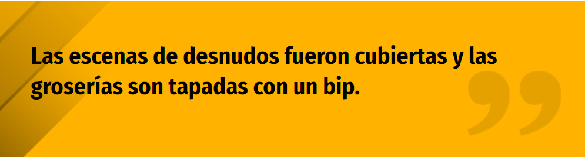

El pasado domingo 22 de diciembre, la cuarta temporada de "Rick and Morty" llegó a Netflix. Al menos, los primeros 5 episodios.
"Rick and Morty" es una serie animada de Adult Swim, creada por Dan Harmon y Justin Roiland. Su primera temporada fue emitida en 2013, y tiempo después Netflix adquirió sus derechos para incluirla en la plataforma de streaming.
Como regalo anticipado de Navidad, el 22 de diciembre Netflix incluyó los primeros 5 episodios de la cuarta temporada de "Rick and Morty" en su catálogo y los fanáticos no podían estar más contentos.
Sin embargo, no fueron todas buenas noticias, ya que los usuarios rápidamente se sorprendieron al ver que la cuarta temporada llegó con censura.
Las reacciones de los fanáticos no fueron buenas en absoluto, y todos piden escuchar la versión original de los episodios.
A pesar de los reclamos de los usuarios, ninguna explicación ha sido dada por parte de Netflix. La fecha de estreno de los 5 episodios restantes aún no está confirmada, pero se espera que llegue a mediados de 2020.